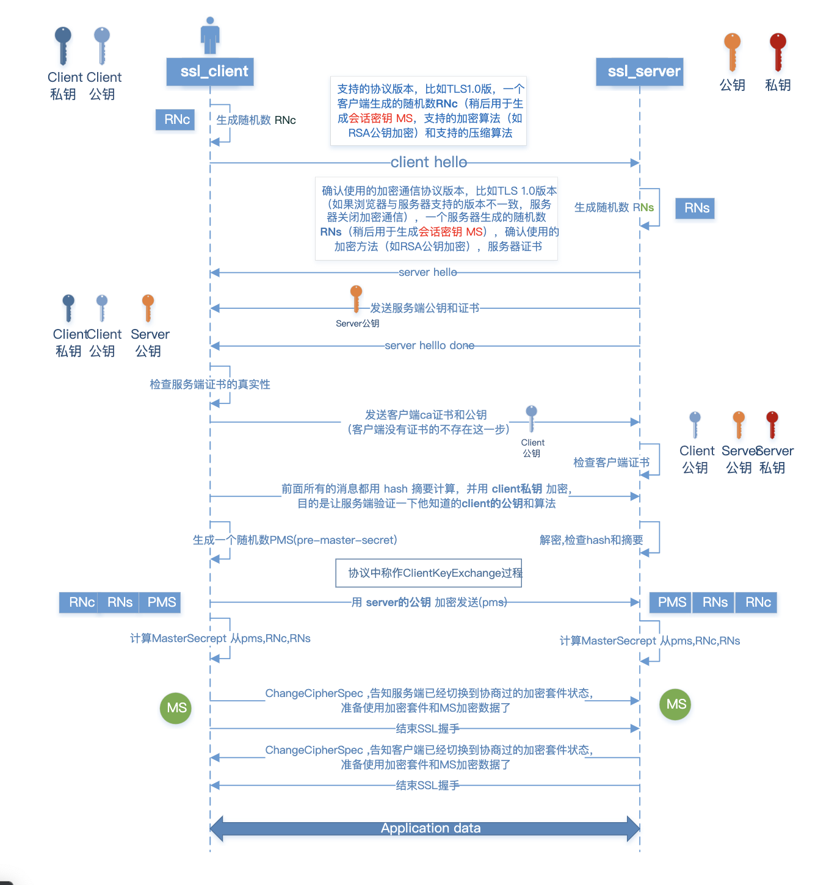

Record Protocol
The TLS Record Protocol is a layered protocol. At each layer,
messages may include fields for length, description, and content.
The Record Protocol takes messages to be transmitted, fragments the
data into manageable blocks, optionally compresses the data, applies
a MAC, encrypts, and transmits the result. Received data is
decrypted, verified, decompressed, reassembled, and then delivered to
higher-level clients.
TLS Connection 传递数据，需要以下参数：
- connectinon end。是 client 或 server
- RF algorithm。用于计算 master_key
- bulk encryption algorithm。用于加密数据
- MAC algorithm。用于计算 message 的 MAC 值。
- compression algorithm。 压缩算法
- master secret。48 bytes secret
- client random。32 bytes
- server random。3 random
Handsahke Protocol

1ClientHello
ClientHello 发送的数据包括：
- client_version (tls版本)
- random; // ranome struct
- session_id (可能为空, 用于标识当前的connection)
- cipher_suites （client 支持的加密算法 list）
- compression_methods （client 支持的压缩算法）
struct {
uint32 gmt_unix_time; // current time
opaque random_bytes[28];
} Random; 32 bytes
2ServerHello
Server 当收到了 ClientHello 后，向 client 发送 ServerHello
ServerHello 包含数据：
- server_verison ()
- random (由 server 生成的 random struct)
- session_id (用于标识 connection，如果 ClientHello 没有传，则会生成一个新的)
- cipher_suite (由 server 选中的加密算法)
- compression_method (由 server 选中的压缩算法)
3Server Certificate
向 client 发送证书和公钥
此处发送的是从权威机构申请的CA证书。
证书中包含服务器公钥、服务器域名，然后证书通过CA私钥签名。
client 在收到证书后，会使用CA的公钥验证签名，以此来验证 服务器的身份、公钥和域名是否真实。
4Certificate Request
向 client 请求证书
5Server Hello Done
当 ServerHello 和 相关信息发送完后，server 会发送 ServerHelloDone。之后会等待 client 的响应。
6Client Certificate
当 client 接收到 ServerHelloDone 后。如果 server 要求证书，client 会向 server 发送 ClientCertificate
7Client Key Exchange Message
由 client 发送。
client 随机生成一个48字节的 pre_master_key，然后通过 server-rsa-public-key 加密，发送给 server。
8Finished
此时双方可以根据同样的算法计算出 master_key 。master_key 为固定长度 48 bytes
master_secret = PRF(pre_master_secret, "master secret",
ClientHello.random + ServerHello.random)
[0..47];
相互发送 Finished message。
Finished message 是第一个使用协商好的 algorithms, master key 来加密的消息。
如果一方已经发送了 Finished，并且接收、验证了对方的 Finished message，则就可以发送 Application Data 了
Application data messages are carried by the record layer and are
fragmented, compressed, and encrypted based on the current connection
state. The messages are treated as transparent data to the record
layer.
其他
CA认证
CA Certificate Authority，负责发放和管理数字证书的权威机构。
CA发放的数字证书，证明证书中列出的用户机构合法拥有证书中列出的公钥。
MAC
Message Authentication Code 消息识别码
通过 MAC algorithm 计算 message 生成 MAC，使用 MAC 来校验消息的完整性。
HMAC
Hash-based Message Authentication Code 哈希消息认证码
HMAC运算利用哈希算法，以一个密钥和一个消息为输入，生成一个消息摘要作为输出。
HMAC（K，M）